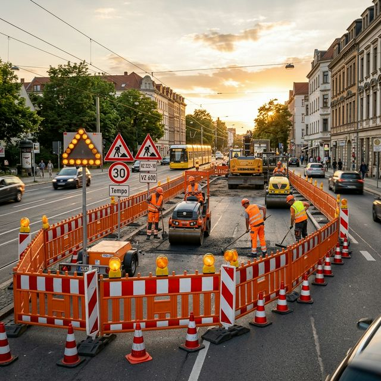

Baustellenabsicherung in Lüneburg
professionell & RSA-konform
Sichere Baustellen in Lüneburg: Wir kümmern uns um Verkehrszeichenpläne, Absperrungen und die Anordnung bei der Stadtverwaltung Lüneburg. Auch für Adendorf und Umgebung.
Baustellenabsicherung in Lüneburg
Die Baustellenabsicherung ist die fachgerechte Sicherung von Arbeitsstellen im Straßenverkehr nach den Richtlinien für die Sicherung von Arbeitsstellen (RSA). Sie schützt Bauarbeiter, Verkehrsteilnehmer und Passanten gleichermaßen und ist in Lüneburg gesetzlich vorgeschrieben.
Wir sind Ihr Full-Service-Partner für Baustellenabsicherung in Lüneburg. Unser Team erstellt den Verkehrszeichenplan, beantragt die Genehmigung bei der Stadtverwaltung Lüneburg, baut die Absicherung auf und führt regelmäßige Kontrollfahrten durch.
Wir sichern in Lüneburg jede Art von Baustelle ab: von der kleinen Gehwegreparatur über Leitungsarbeiten bis hin zur mehrspurigen Straßenbaustelle. Unser MVAS-geschultes Team und modernes Equipment garantieren höchste Sicherheit.
Unsere Absicherungsleistungen
Absperrbaken & Leiteinrichtungen
Aufstellung aller erforderlichen Absperrbaken und Leiteinrichtungen zur sicheren Verkehrsführung in Lüneburg.
Verkehrszeichenpläne
Erstellung maßstabsgetreuer Verkehrszeichenpläne als Grundlage für die Genehmigung der Stadtverwaltung Lüneburg.
Warnleuchten & Beleuchtung
LED-Warnleuchten und Baustellenbeleuchtung für Tag- und Nachtsicherung an Ihrer Baustelle in Lüneburg.
Verkehrszeichen & Beschilderung
Fachgerechte Aufstellung aller Warn-, Verbots- und Hinweiszeichen inkl. Umleitungsbeschilderung in Lüneburg.
Kontrollfahrten & Wartung
Regelmäßige Überprüfung aller Absicherungselemente in Lüneburg mit sofortiger Mängelbeseitigung.
Genehmigungen & Anordnungen
Komplette Beantragung der verkehrsrechtlichen Anordnung bei der Stadtverwaltung Lüneburg.
Baustellenabsicherung in Lüneburg für alle Bauarten
Von der kleinen Gehwegreparatur bis zur mehrspurigen Straßenbaustelle in Lüneburg – wir sichern jede Arbeitsstelle professionell ab.
Straßenbau & Deckenerneuerung
Großflächige Absicherung bei Asphaltier- und Straßenbauarbeiten in Lüneburg – auch auf mehrspurigen Straßen mit Fahrbahneinengung.
Leitungsbau (Strom/Gas/Wasser)
Sicherung bei Verlegung und Reparatur von Versorgungsleitungen in Lüneburg mit minimaler Verkehrsbeeinträchtigung.
Hochbau & Gerüstbau
Absicherung von Kran- und Gerüststellplätzen, Containerstellflächen und Baustellenzufahrten in Lüneburg.
Gehweg- & Radwegabsicherung
Sichere Umleitung von Fußgängern und Radfahrern in Lüneburg mit barrierefreien Zugängen und taktilen Leitsystemen.
Nacht- & Wochenendarbeiten
Spezielle Beleuchtungskonzepte und reflektierende Absicherung für Arbeiten bei Dunkelheit in Lüneburg.
Vollsperrung & Umleitung
Komplette Sperrung und Umleitungsbeschilderung für größere Baumaßnahmen in Lüneburg und Umgebung.
Baustellenabsicherung in Lüneburg – 5 Schritte
Von der Anfrage bis zum Abbau – wir sorgen für eine reibungslose Baustellenabsicherung in Lüneburg.
Anfrage & Bestandsaufnahme
Beschreiben Sie uns Ihr Projekt in Lüneburg: Wo wird gebaut, welche Straßen sind betroffen, wie lange dauern die Arbeiten?
Planung & Kalkulation
Auf Basis Ihrer Angaben erstellen wir den Verkehrszeichenplan und kalkulieren ein transparentes Angebot für Ihre Baustelle in Lüneburg.
Behördliche Abstimmung
Die verkehrsrechtliche Anordnung beantragen wir direkt bei der Stadtverwaltung Lüneburg. Sie müssen sich um nichts kümmern.
Professioneller Aufbau
Unser geschultes Team stellt alle Absperrelemente, Verkehrszeichen und Warnleuchten in Lüneburg termingerecht auf.
Laufende Betreuung & Abbau
Während der gesamten Bauzeit führen wir Kontrollfahrten in Lüneburg durch. Am Ende bauen wir alles rückstandslos ab.
Was kostet eine Baustellenabsicherung in Lüneburg?
Die Kosten für eine Baustellenabsicherung in Lüneburg richten sich nach Umfang, Dauer, Straßenklasse und den benötigten Absicherungselementen. Hier ein Überblick der Kostenfaktoren:
Mietkosten Absperrtechnik
Tages- oder Wochenmietpauschalen für Absperrbaken, Leitschwellen und mobile Schutzeinrichtungen in Lüneburg.
Absperrungen & Beschilderung
Kosten für Absperrbaken, Verkehrszeichen und Leiteinrichtungen in Lüneburg. Individuell nach Baustellengröße berechnet.
Verkehrszeichenplan
Erstellung des maßstabsgetreuen Plans nach RSA für Ihre Baustelle in Lüneburg. Komplexität variiert nach Straßenklasse.
Behördliche Gebühren
Die Stadtverwaltung Lüneburg erhebt Gebühren für die verkehrsrechtliche Anordnung. Diese werden transparent weitergegeben.
Fordern Sie jetzt Ihr kostenloses und unverbindliches Angebot an – exakt zugeschnitten auf Ihre Baustelle in Lüneburg.
Häufig gestellte Fragen zur Baustellenabsicherung in Lüneburg
Antworten auf die wichtigsten Fragen rund um die Baustellenabsicherung in Lüneburg.
Wie schnell können Sie eine Baustelle in Lüneburg absichern?
In Notfällen sind wir in Lüneburg innerhalb von 24 Stunden einsatzbereit. Reguläre Absicherungen planen wir mit 5–10 Werktagen Vorlauf, da die Anordnung bei der Stadtverwaltung Lüneburg beantragt werden muss.
Brauche ich in Lüneburg für jede Baustelle eine Genehmigung?
Ja, für jede Arbeitsstelle im öffentlichen Straßenraum von Lüneburg ist eine verkehrsrechtliche Anordnung der Stadtverwaltung Lüneburg erforderlich. Auf Privatgelände ist dies nicht nötig. Wir beantragen die Genehmigung für Sie.
Welche Leistungen umfasst die Baustellenabsicherung in Lüneburg?
Unsere Baustellenabsicherung in Lüneburg umfasst: Verkehrszeichenplan-Erstellung, Beantragung der verkehrsrechtlichen Anordnung bei der Stadtverwaltung Lüneburg, Aufstellung von Absperrbaken, Verkehrszeichen und Warnleuchten sowie regelmäßige Kontrollfahrten.
Was kostet eine Baustellenabsicherung in Lüneburg?
Die Kosten für eine Baustellenabsicherung in Lüneburg variieren je nach Umfang und Dauer. Einfache Gehwegabsicherungen beginnen ab ca. 150 Euro, komplexe Absicherungen werden individuell kalkuliert. Wir erstellen Ihnen ein kostenloses Angebot für Lüneburg.
Stellen Sie auch mobile Ampeln in Lüneburg auf?
Ja, bei Fahrbahnverengungen oder Einbahnstraßenregelungen in Lüneburg setzen wir mobile Lichtsignalanlagen ein. Diese werden in der verkehrsrechtlichen Anordnung der Stadtverwaltung Lüneburg genehmigt.
Was kostet ein Verkehrszeichenplan für Lüneburg?
Die Kosten für einen Verkehrszeichenplan in Lüneburg hängen von der Komplexität der Baustelle ab. Bei uns ist die Planung oft im Gesamtpaket enthalten. Fragen Sie uns nach einem Angebot.
Wie lange muss die Absicherung in Lüneburg stehen bleiben?
Die Absicherung bleibt so lange stehen, wie die Baustelle in Lüneburg aktiv ist. Die genaue Dauer wird in der verkehrsrechtlichen Anordnung der Stadtverwaltung Lüneburg festgelegt.
Wer beantragt die Genehmigung für meine Baustelle in Lüneburg?
Wir übernehmen die komplette Antragstellung bei der Stadtverwaltung Lüneburg für Sie. Sie müssen sich um nichts kümmern – wir liefern Ihnen die fertige Genehmigung.
Sind Sie in Lüneburg und Umgebung tätig?
Ja, wir sind in Lüneburg und im gesamten Hansestadt Lüneburg tätig. Auch in Adendorf, Bardowick, Reppenstedt sind wir regelmäßig im Einsatz.
Können Sie Gehwege und Radwege in Lüneburg absichern?
Ja, Gehweg- und Radwegabsicherungen in Lüneburg gehören zu unserem Kerngeschäft. Wir sorgen für sichere Umgehungsmöglichkeiten und barrierefreie Zugänge.
Baustellenabsicherung in Lüneburg
jetzt anfragen
Teilen Sie uns die Details zu Ihrer Baustelle in Lüneburg mit. Wir erstellen Ihnen umgehend ein individuelles Angebot.
04131 3942977
info@verkehrssicherung-adler.de
Baustellenabsicherung auch in diesen Städten
Wir bieten Baustellenabsicherung nicht nur in Lüneburg an. Entdecken Sie unseren Service in weiteren Städten der Region.